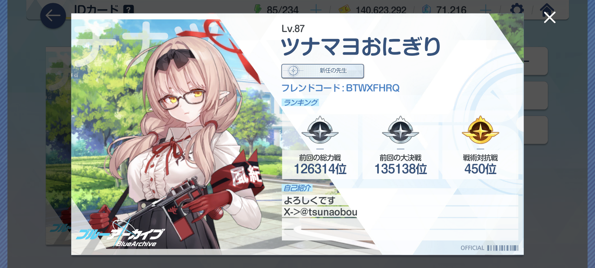
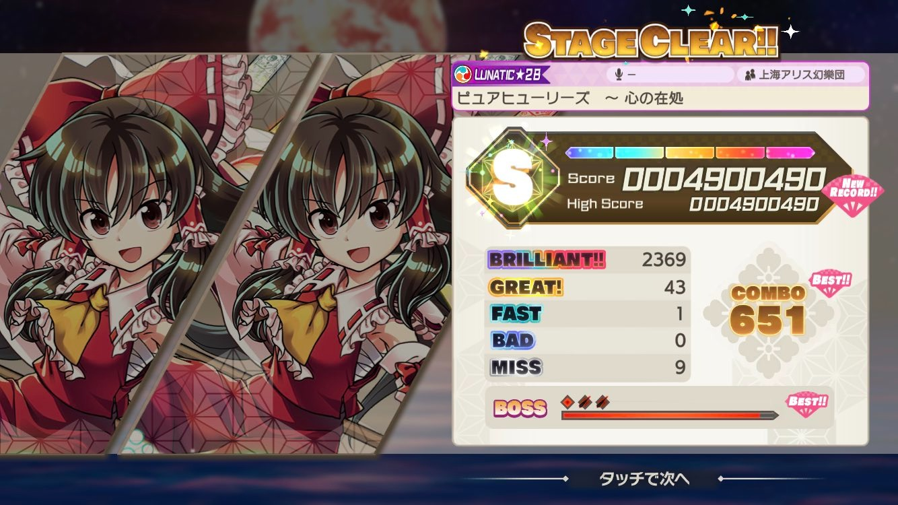
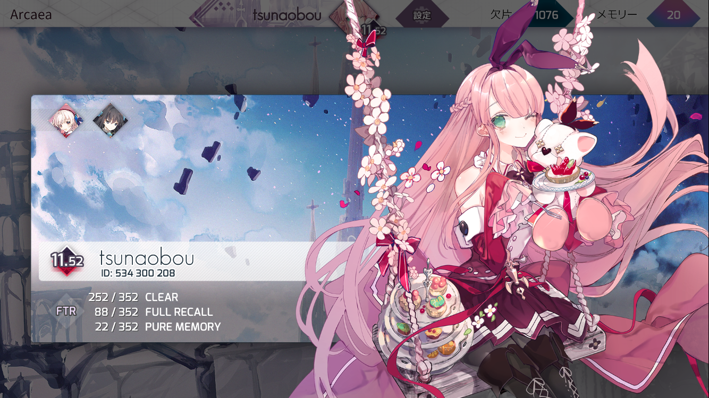
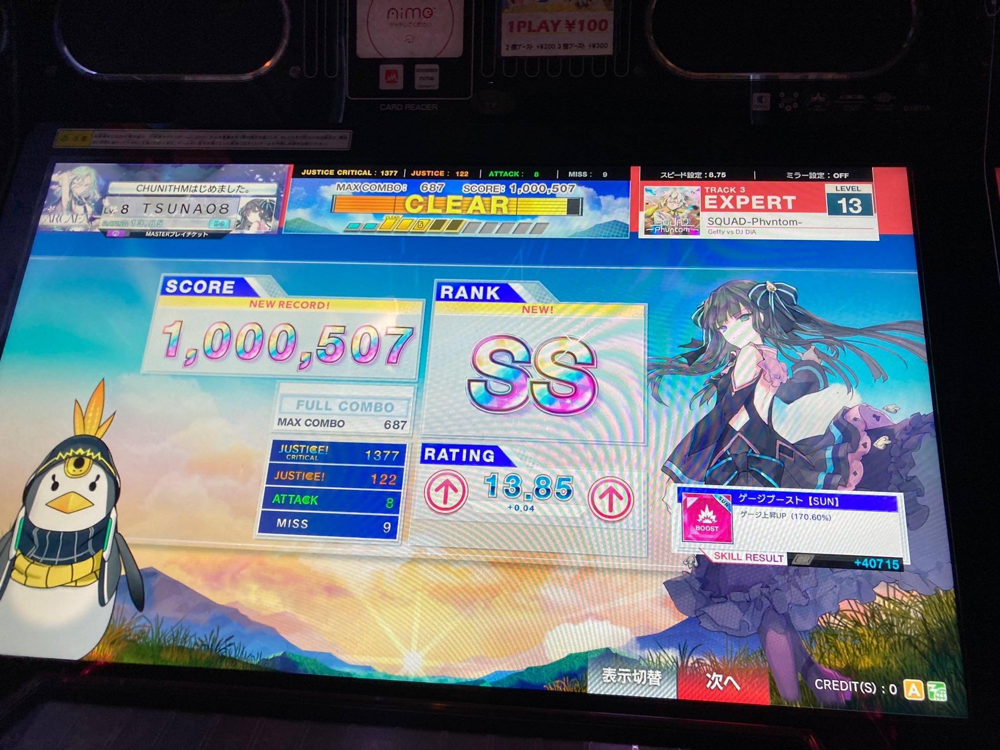
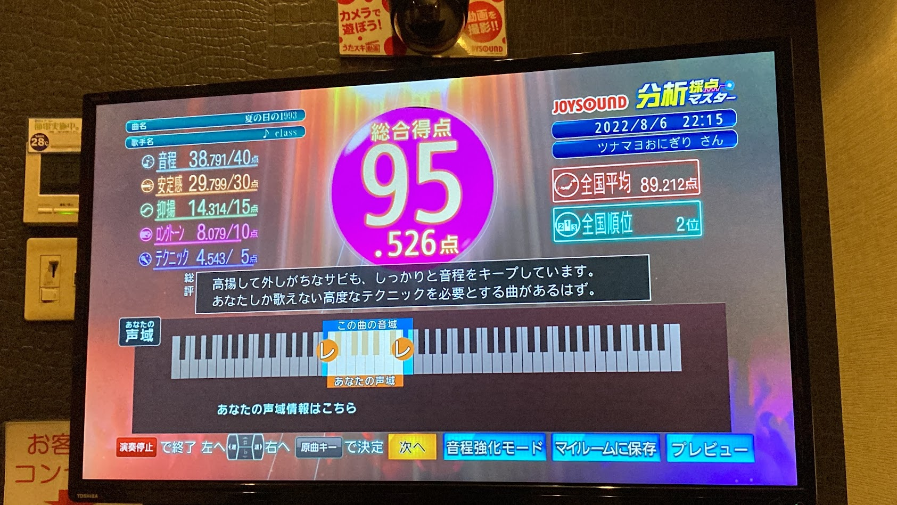
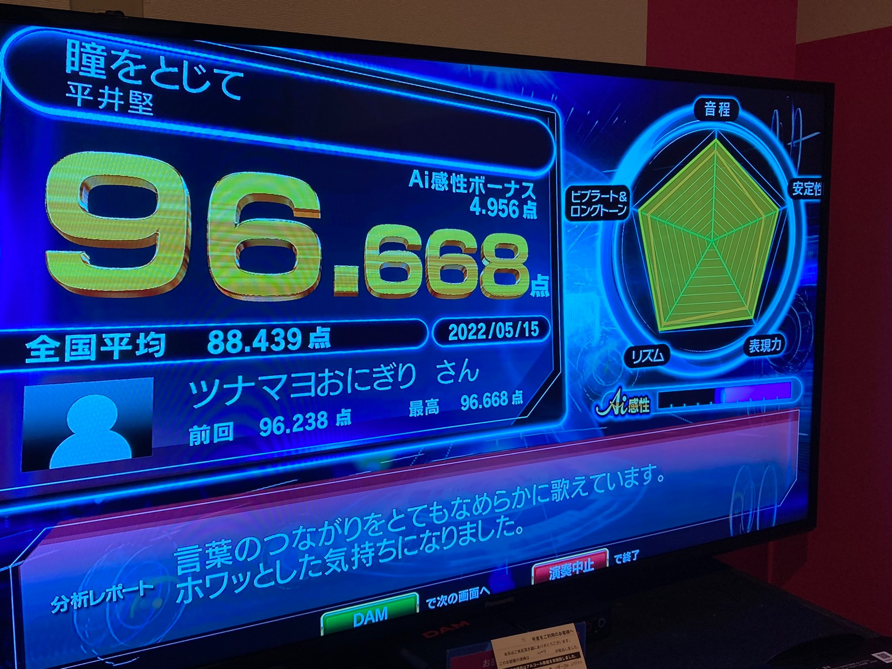
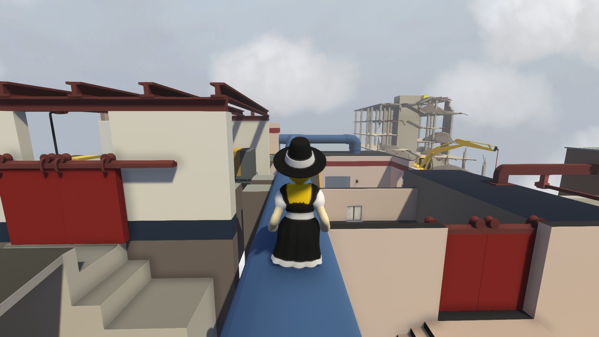
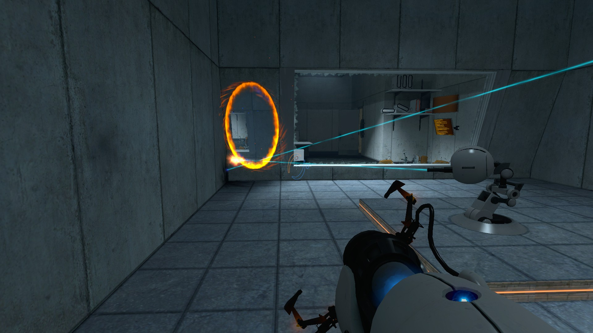
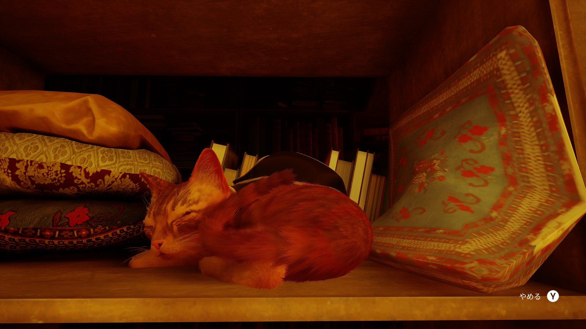

Hobby
ここでは私の主な趣味を紹介します。
ソーシャルゲーム(ブルアカ)
最近は専らこのゲームに時間を吸われています。疲れた心に染み渡ってきます。コードを置いておくのでよければフレンドになってやってください。 
音楽鑑賞
最近はHyperFlipと2step Garage、UK drillとHip Hopにハマってます。Future Core, Future Bass, Jersey Club, Hi-Tech, EDM, Hardcore, J-Popも好きです。
好きな曲のプレイリストを紹介します。ぜひ聴いてみて下さい。
音楽ゲーム
サービス終了してしまいましたが、東方ダンマクカグラというゲームが好きでした。クラファンに25000円つぎ込んで現在完成待ちです。 
あとはArcaeaもやってはいますが、最近はあんまり浮上してないです。

リアル音ゲーではチュウニズムが好きです。レートは14くらいでエンジョイ勢、
というか年に数回だけゲーセンに行く程度です。 
カラオケ
下手ではないですが上手くもないです。棒歌いになっちゃうのが弱点。大体は90ちょいが平均かな...一応JOYSOUNDとDAMでの最高記録を載せておきます。 最近行けてないから行きたいね...  
PCゲーム
Steamでゲームを買ってプレイしています。スクショの一部を見てみてください。
Human Fall Flat

Portal

Stray

プログラミング
Pythonで小道具を作ったりしています。今後JavaScriptやJavaなどを使ったGUIツールを作ったりしていきたいです。
ちょっとした私の作品です。よければ使ってください。


動画視聴
YouTubeやらニコニコ動画やら、色んなサイトで動画を見てます。音MADなどの動画が特に好きです。
ここではオススメの動画を紹介します。
DJ
大学のサークルではXDJ-RXという機材を使ってます。手持ちの機材が未だにないのでいい加減DDJ-FLX4を買ってDJしたい...
MixはそのうちSoundCloudにでもアップします。